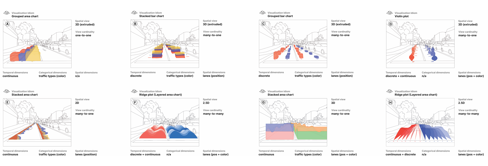
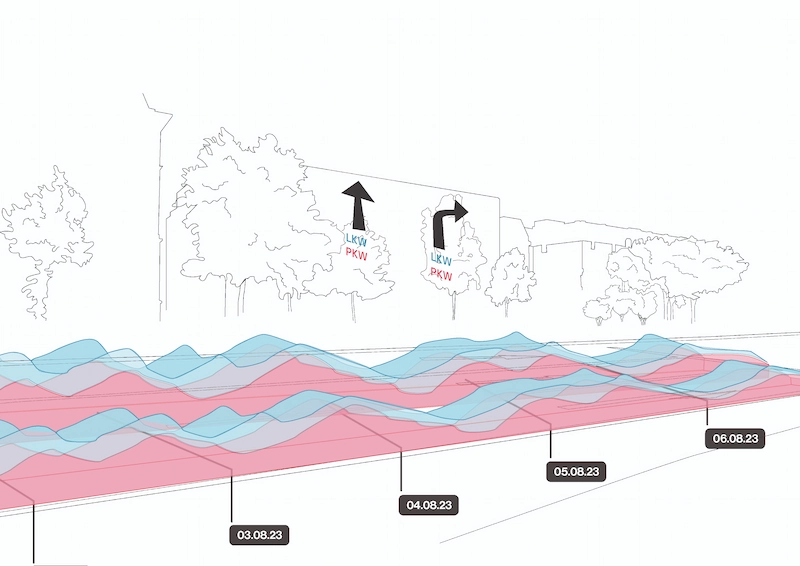
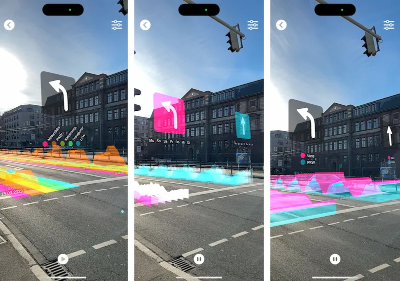

Video by Till Nagel (HDIL)

Challenge
Explore the visualization of urban data and improve the public's interaction with urban data to enhance the real-world experience.
Solution
We have integrated a dynamic visualization of traffic data into the urban landscape.
To do this, we closely linked the visualization to its physical and perceptual context.
Output
We looked at various aspects of the visualization in a design space.
Later, we developed a mobile application to test the designs in the real world.
In the demonstrator, traffic, divided into the categories of cars, motorcycles and trucks, is visualized in real time.
For this purpose, computer vision-based tracking systems were used, which are installed at locations and track the individual vehicles.


I was particularly involved in the conception of the visualization and the creation of the design space for the drafts of the data visualization. I also created the first UI designs for the demonstrator application.